For a person you care about.
Step 1 of 12
1
Think of one person. Write a short note on the plain side of your paper. This side ends up inside the crane.
Step 2 of 12
2
Keep the note side up. Fold the paper corner to corner. Unfold. Fold the other two corners together. Unfold.
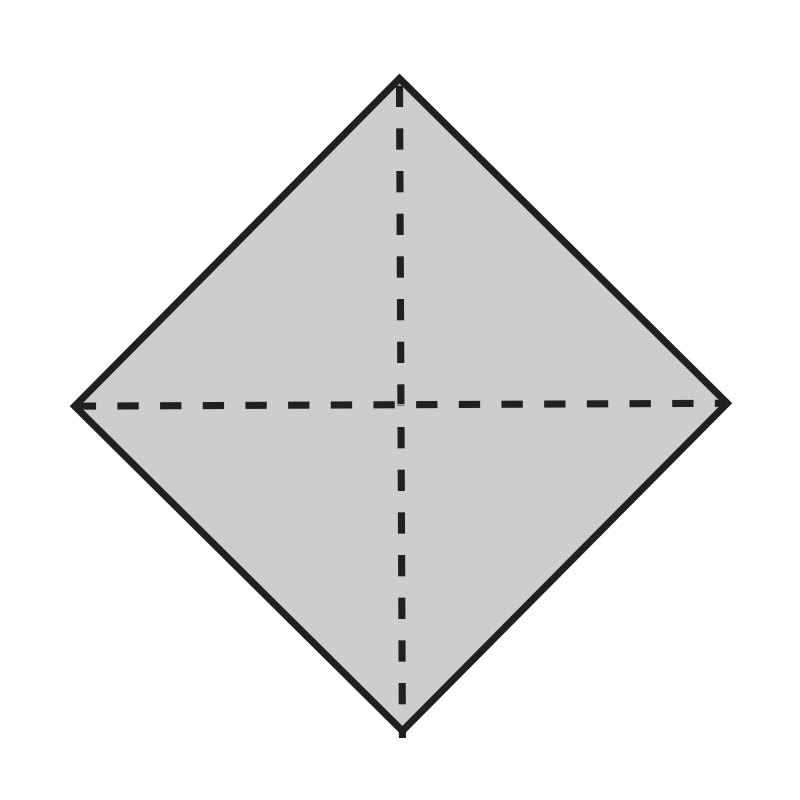
Step 3 of 12
3
Fold the paper in half, edge to edge. Unfold. Fold it in half the other way. Unfold.
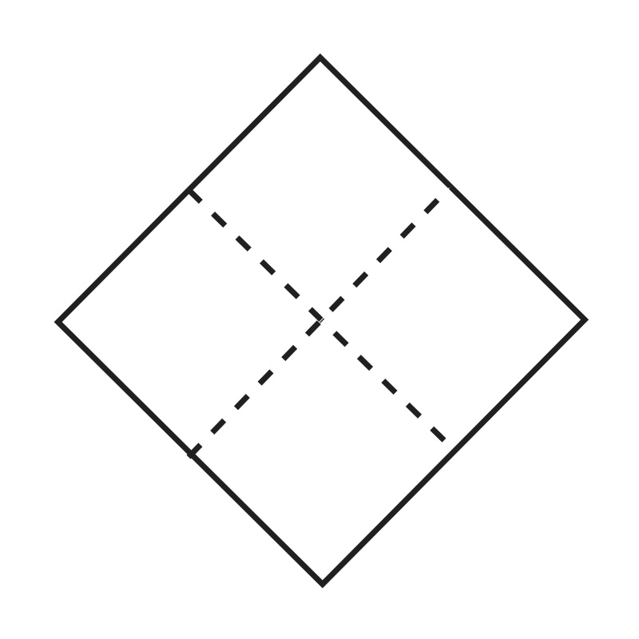
Step 4 of 12
4
Push the sides in along the creases. Bring the three top corners down to the bottom corner. Flatten it.
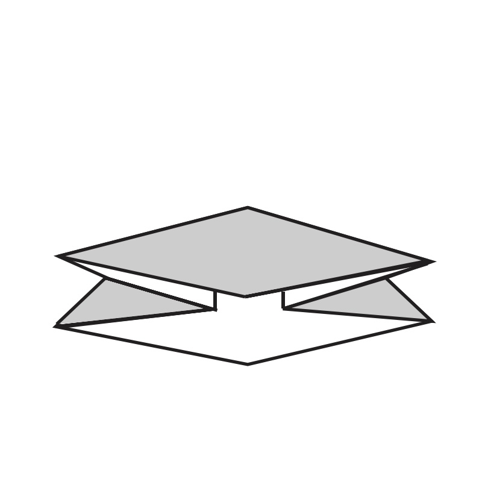
Step 5 of 12
5
Point the open end down. Fold the lower edges of the top layer to the center line. Flip it over and repeat.
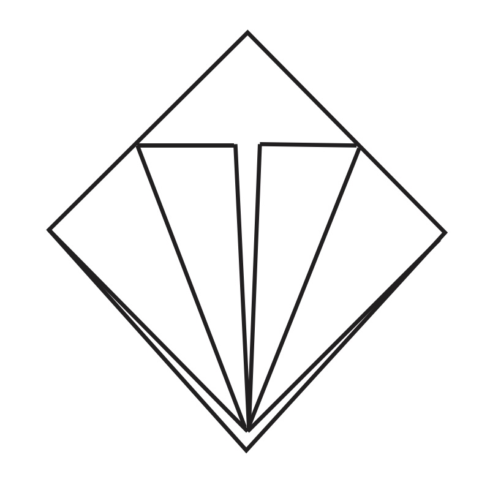
Step 6 of 12
6
Fold the top triangle down over previous folds. Press the crease. Unfold the triangle and the side folds.
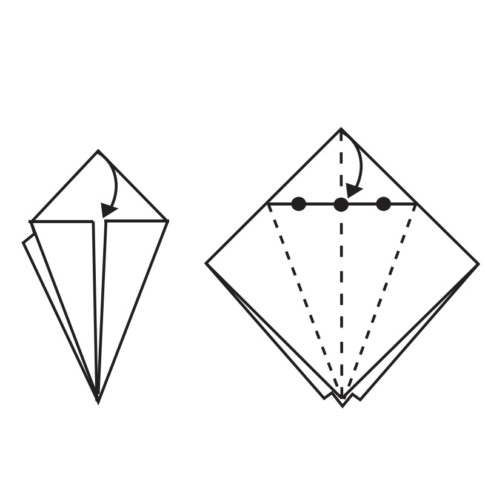
Step 7 of 12
7
Lift the bottom point of the top layer up. Press the sides in and flatten. Flip it over and repeat.
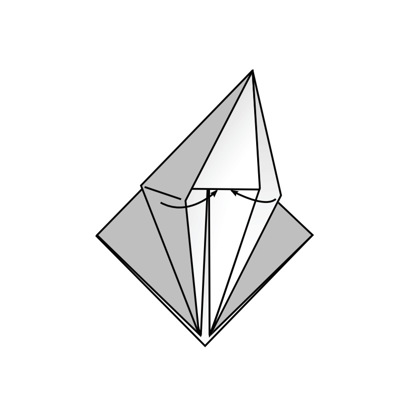
Step 8 of 12
8
Fold the lower edges of the top layer to the center line. Flip it over and repeat.
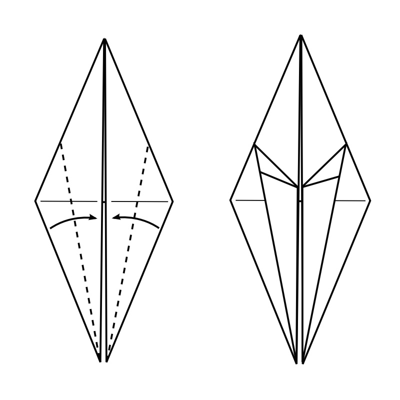
Step 9 of 12
9
Fold the top layer to lay on top of the left side like turning the page of a book. Flip over and repeat on other side.
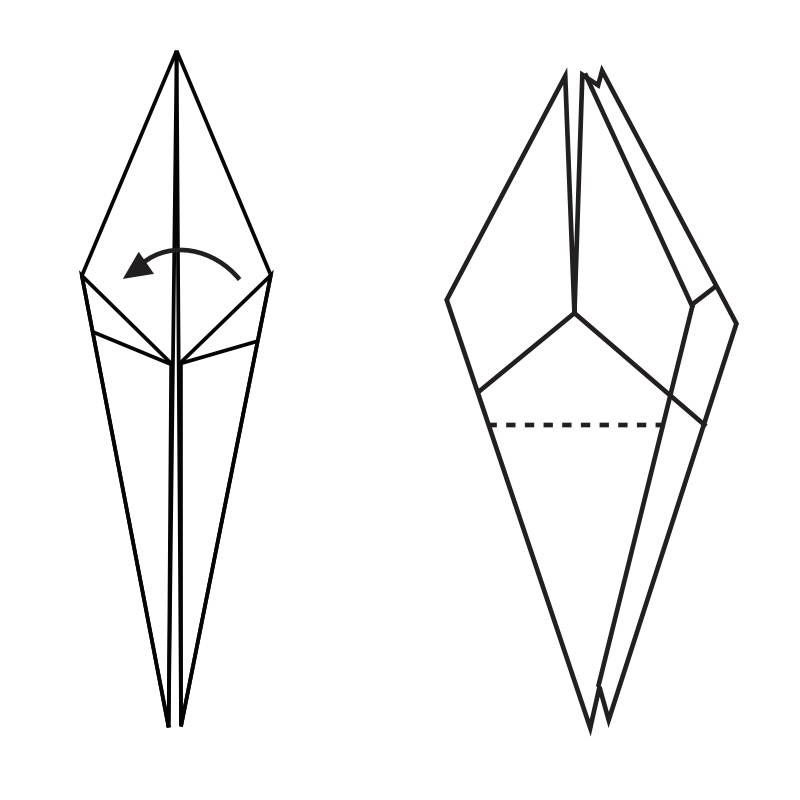
Step 10 of 12
10
Fold up the top layer as far as you can on each side.
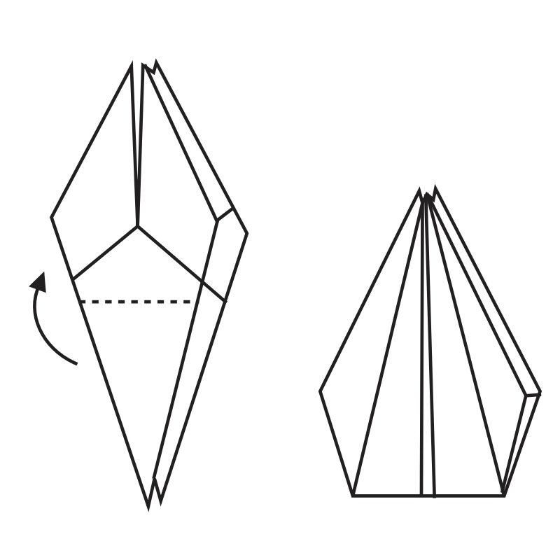
Step 11 of 12
11
Fold the top layer (right side) to lay on top of the left side like turning the page of a book. Flip over and repeat on the other side.
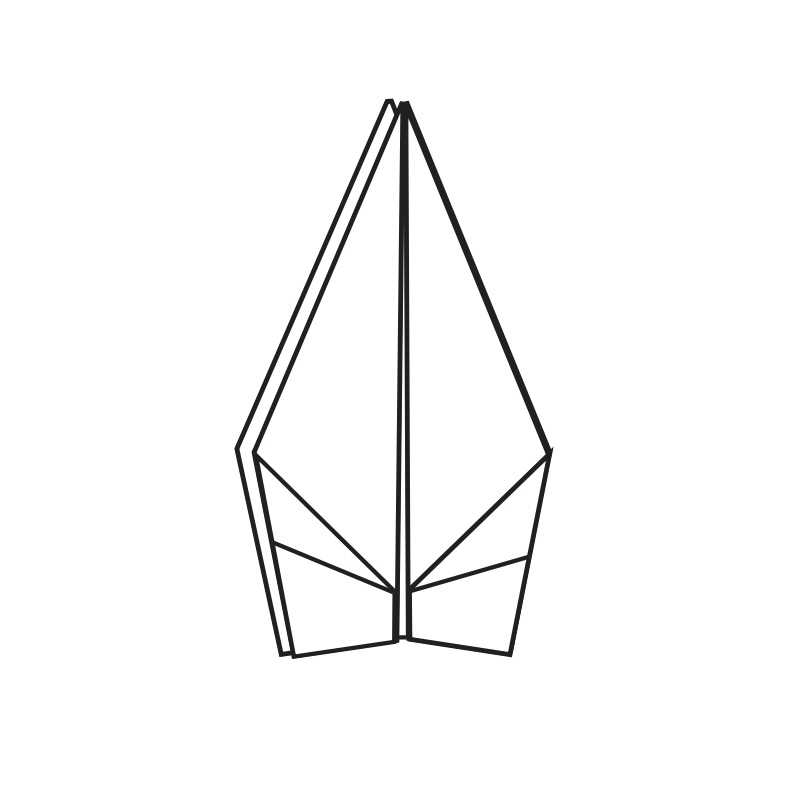
Step 12 of 12
12
Fold down the wings.
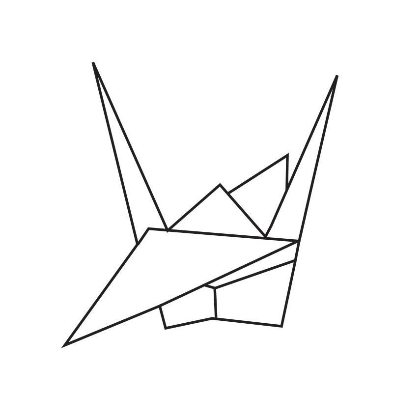
Step 12 of 12
12
Bend down the head to give the crane a long beak. Pull the wings straight out from the body so that the body inflates.
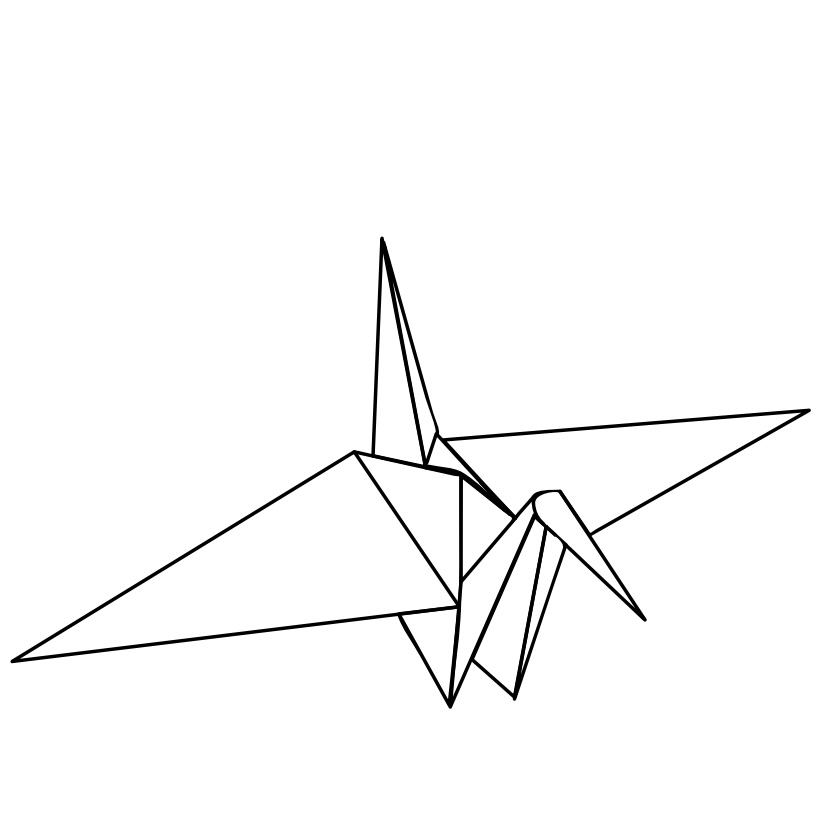
Step 12 of 12
12
Give the crane to your person. Tell them the note is hidden inside. They can unfold the crane to read it.
Cranes folded by other people.
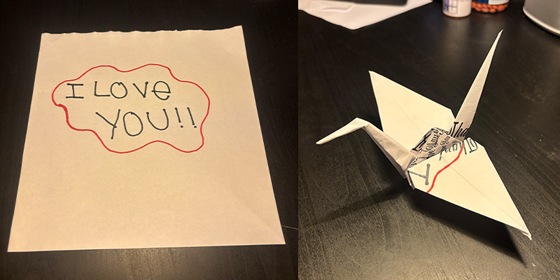
Finn wrote "I Love You"
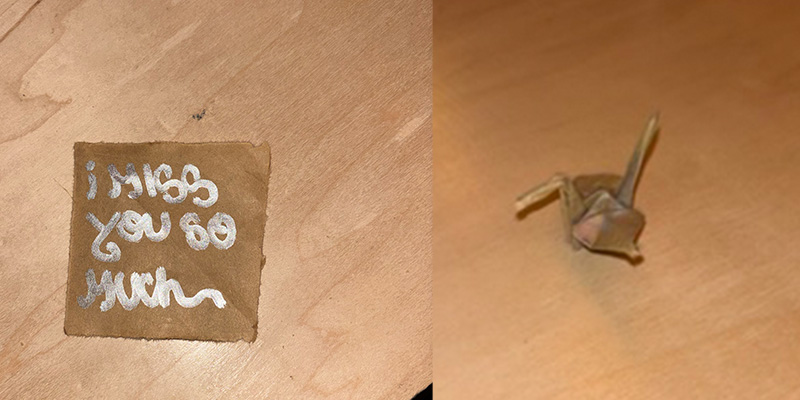
Joe wrote "I miss you so much"